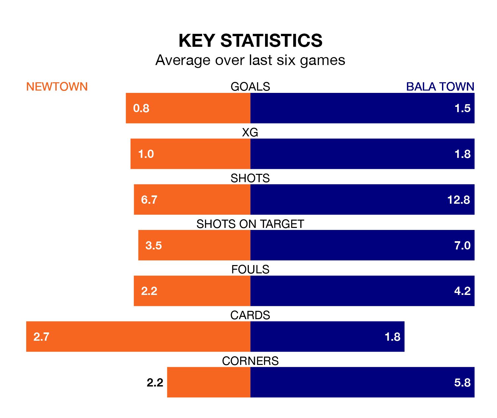

Struggling Newtown face Bala Town at G.F. Grigg Latham Park on Saturday looking to build on a win in their last league outing.
After securing all three points with a 2-3 victory over Connah's Quay on February 10, the White Stars sit fifth in the Welsh Premier League.
They travel to play a Bala side third in the standings, who lost in their last match, 1-0 against The New Saints, on February 9.
Newtown are in awful form in the Welsh Premier League, with no wins and six losses from their last six games.
With three wins and a draw over that period, Bala's form is much better – they have taken 10 points from 18, compared to the White Stars's zero.
In the last 10 years, Newtown and Bala have played each other on 34 occasions. Newtown won seven of them, Bala 21, and they drew six times.
On average, the White Stars scored 1.1 goals and the Lakesiders 1.9 in those matches.
Their last meeting was on December 30, when Bala won 2-1 at home.
With 26 goals in 24 games so far this season, Town are the league's-3th-lowest scorers with 1.1 goals per game. But they are conceding fewer than average too, letting in 22 goals at a rate of 0.9 per game.
The hosts, meanwhile, are average scorers, with 1.5 goals per game. They have also conceded 1.5 goals per game.
Updated: 13:04 (UTC), 16/02/24